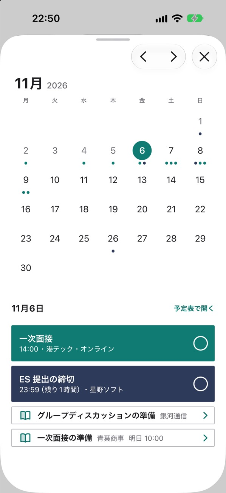
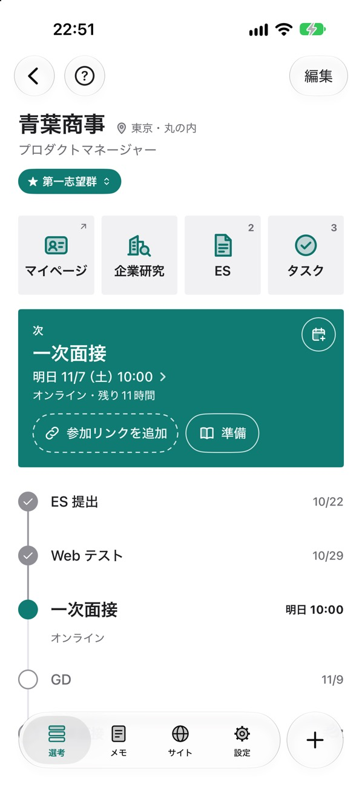
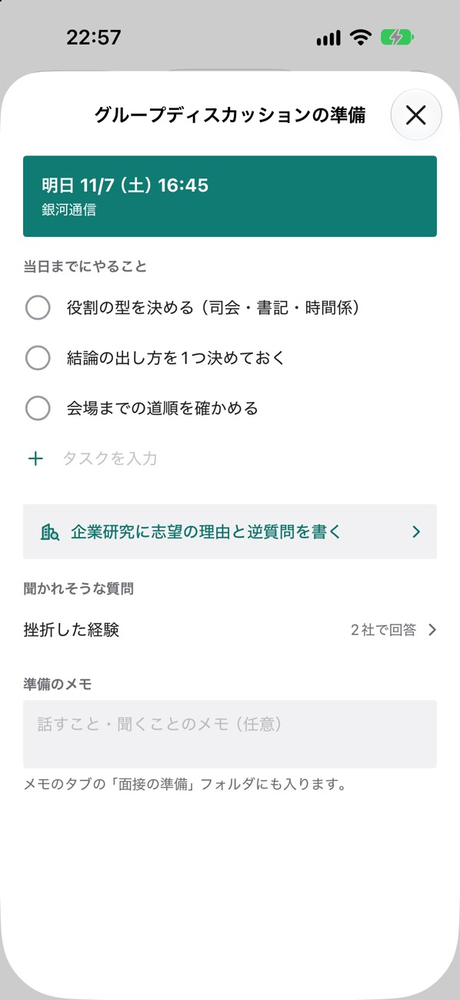
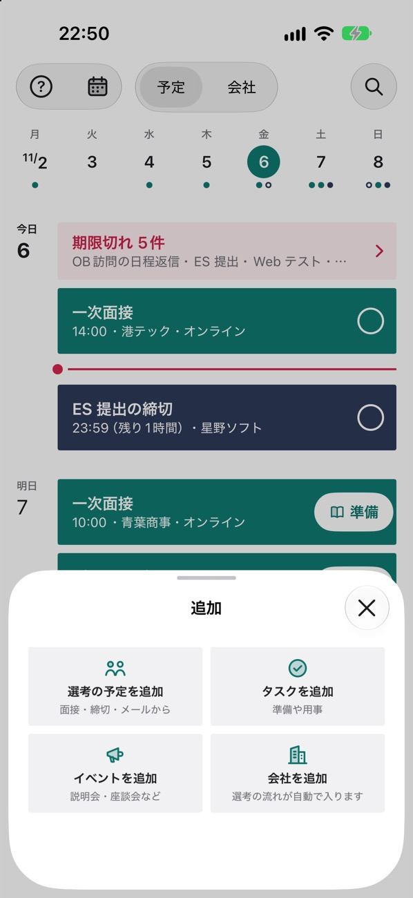

就活Hub iPhone アプリ
開いた瞬間に、
次にやることが分かる。
就活の締切・面接・説明会を、日付順の予定表で見るアプリです。
App Store で入手無料・ログインなし・iOS 26 以上

こんな時に
- 締切がメールとマイページに散らばっている予定表に、締切・面接・説明会がまとめて並びます。
- どの会社がどこまで進んだか分からない会社ごとのページに、選考の流れが線で並びます。
- 面接の反省を次に生かせない振り返りに残した「次に直すこと」が、次の準備の画面に出ます。
- 過ぎた締切に気づかないまだ済んでいない締切は、予定表の一番上に出ます。
予定表
今日と明日の予定が、
上から並びます。
面接や説明会など出向く予定は緑、締切は紺で出ます。締切は右の ○ を押すと済みにできます。左上のカレンダーから、月の予定も開けます。

会社のページ
選考の流れと、
次の日時が1枚に。
いちばん上に次の面接の日時と参加リンク、その下に ES 提出から最終面接までの流れが並びます。

振り返りと準備
面接の後に残すと、
次の準備に出ます。
面接が終わったら、手応えと「次に直すこと」を残せます。次の面接の前に開く準備の画面に、その内容が出ます。


予定の追加
募集ページから、
メールから。
募集ページを Safari から共有すると、会社名と日程を読み取ります。面接の案内メールは、貼り付けると日時と参加リンクを読み取ります。

安心して使えるように
ログインなしデータは自分の iCloud に保存し、同じ Apple Account の iPhone 同士で同期します。
無料いまの版は、すべての機能を無料で使えます。広告もありません。
iPhone で読み取り貼り付けたメールの読み取りは、iPhone の中で行います。
Web版から移れますWeb版の「エクスポート（JSON）」を、アプリの取り込みで選びます。
就活の予定を、
1つの予定表に。
App Store で入手
無料・ログインなし・iOS 26 以上